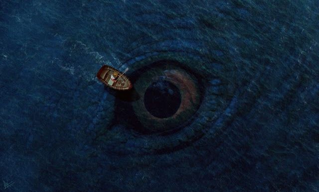

Mauricio Siguantay
Datos Personales
- Edad: 14 años
- Lugar residencial: Colonia San Francisco
- Fecha Nacimiento: 11/02/2011
Contacto
Hobbies


Fobias

Comida Favoritas
Datos Academicos
- Segundo Basico - 2025 - Instituto Kjell Eugenio Laured Garcia
- Primero Basico - 2024 - Instituto Kjell Eugenio Laured Garcia
- 6to Primaria - 2023 - Escuela Santa Rita
- 5to Primaria - 2022 - Escuela Santa Rita
- 4to Primaria - 2021 - Escuela Santa Rita
- 3ro Primaria - 2020 - Escuela Santa Rita
- 2do Primaria - 2019 - Escuela Santa Rita
- 1ro Primaria - 2018 - Escuela Santa Rita
Otras Preferencias
- Equipo: Real Madrid
- Jugador: Cristiano Ronaldo
- Color: Negro
- Animal: León
- Epoca: Verano